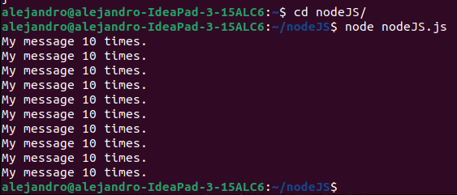

It is a JS runtime,
Its a JS implementation we can run outside our browser, which allows us to do many things.
We use the same syntax as vanilla JS.
The first server side implementation was created 13 years before node.js
It is the most popular of any available JS.
We can create applications.
We can create web servers.
We can create command line tools. (In the terminal).
We can create native applications. (Like VS Code and Slack through Electron).
We can create games.
We can create drone software.
The Node.js REPL is basically the JavaScript console running in our terminal, we can use any JS code we want.
It is used to debug, play around and test things, it works like a sandbox just waiting for our input to evaluate and run it.
.help gives us some tips for commands, not accessible in the regular JS console.
Ctrl + D will also exit node.
The window or global top level object isn't available in node. Instead, global gets us to the window.
Neither is DOM manipulation, since Document isn't available either.
We don't use node.js to write our code, just like we wouldn't use the web console either.
Once we have a js file, we must cd into the folder where our file is located.
(IF NOT IN THE FOLDER WHERE OUR FILE IS, WE MUST SPECIFY THE RELATIVE PATH WHERE THE FILE IS TO RUN SUCCESSFULLY.)
We can then run : node file.js.
This will execute the code inside our js file without the need to sync it to an HTML file.
SO node WILL OPEN THE REPL/CONSOLE AND node file.js WILL RUN THE FILE INSIDE THE TERMINAL.
This built-in node method will return the first 2 paths of where the node file is.
We can eliminate the first 2 strings returned and add our own arguments, her we use this with a for of loop.